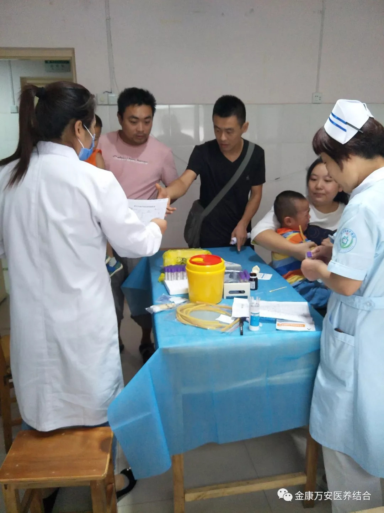
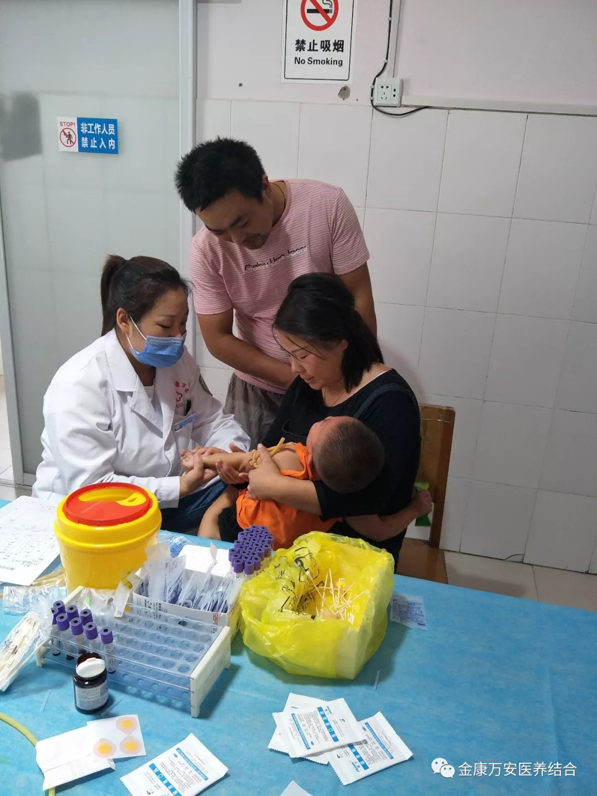
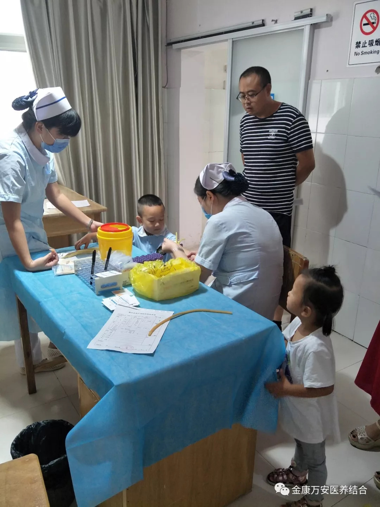

健康体检 安全成长—金康幼儿园、启聪特殊教育学校入学前健康体检
人气: "" 时间：2018-09-03
秋季幼儿园开学，体检是入学进入幼儿园前的第一要务。2018年9月2日上午，漯河金康护理院迎来了金康幼儿园、启聪特殊教育学校小朋友入学前体检。

幼儿园入园体检主要是为了帮助了解孩子的生长发育情况，为幼儿园保健提供依据，能及时发现贫血、视力异常、龋齿、佝偻病、营养不良、生长发育落后等其他问题。
通过定期健康检查，对儿童生长发育进行监测和评价，早发现异常和疾病，及时指导家长做好科学育儿及疾病预防，促进儿童健康成长。同时也为幼儿园保育工作的开展和膳食营养的搭配提供重要的科学依据，有效地促进幼儿身心健康！

为确保体检的顺利进行，金康护理院全体医护人员高度重视，由于体检小朋友较多，医技科的人手不够，体检负责人了解后立即抽调住院部护士长王景睿前来帮忙，王护士长二话不说就前来帮忙。在体检过程中，家长陪同小朋友们有序的排队，减轻了人员紧张的负担。
体检结束后，各位家长对我院的服务及孝慈仁善的文化给予了高度评价，说我们不仅幼儿园的老师服务好、态度好、教学质量好，我们的医院也是如此，家长说把孩子交给我们幼儿园他们放心，带孩子来金康护理院体检他们更放心。
